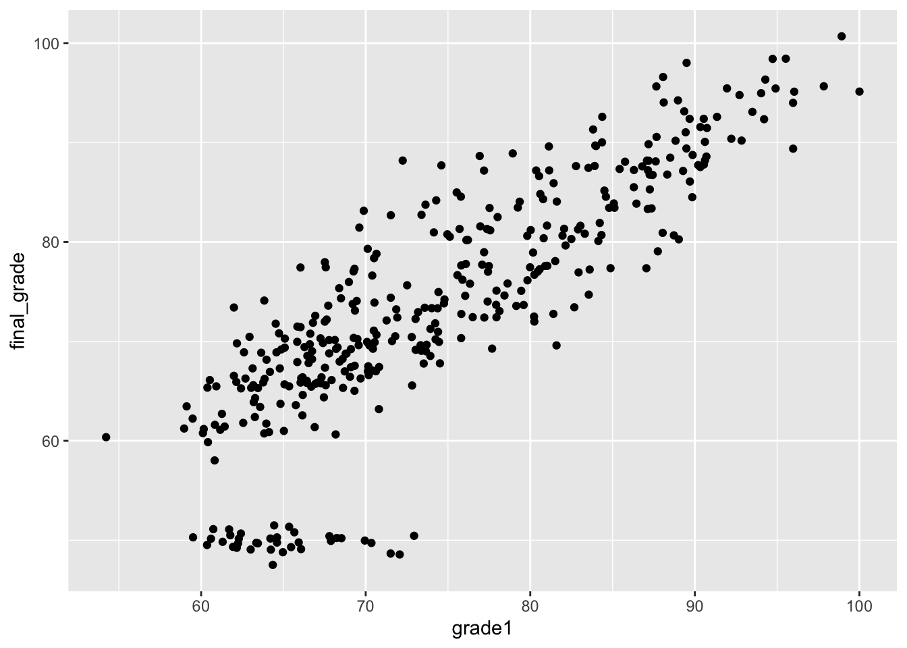
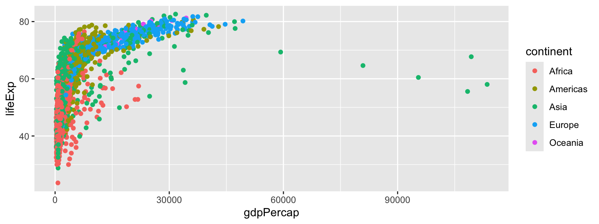

load("./students-data.Rdata")But First…
We need some data.
As you’ll see, the type of plot you will want to draw depends crucially on the type of data that you have.
. . .
Suppose we have a tibble called students that looks like this:
| sex | study_time | grade1 | final_grade |
|---|---|---|---|
| female | 5-10 hrs | 94.9 | 95.4 |
| male | 2-5 hrs | 79.6 | 73.7 |
| female | 5-10 hrs | 64.2 | 49.1 |
| . . . | . . . | . . . | . . . |
Where study_time is hours per week studying math, grade1 is their first-semester math grade, and final_grade is their final grade in the math course
But First…
| sex | study_time | grade1 | final_grade |
|---|---|---|---|
| female | 5-10 hrs | 94.9 | 95.4 |
| male | 2-5 hrs | 79.6 | 73.7 |
| female | 5-10 hrs | 64.2 | 49.1 |
| . . . | . . . | . . . | . . . |
We have some variables which are categorical (sex takes either “male” or “female” and study_time takes on 0-2 hrs, 2-5 hrs, etc.).
We have other variables which are numeric, and in particular, continuous (grade1 and final_grade can take any value between 0 and 100)
These being different “type” of variables means we use different “recipes” to visualize them
Data and quick ggplot() syntax
I will be using the dataset you can find below the lecture, named students
Download it, open RStudio and in your terminal load it using:
The exact path will change depending on where it is stored on your device. I recommend right-clicking on the file itself and copying the path shown in the properties.
Note: This is not necessary for you to do. It’s just if you want to follow along
Recipe 1: Bar Plots
geom_bar()
Q: How many hours do students spend studying?
- Distrubtion of a single discrete variable \(\rightarrow\) Use a Bar Plot
students %>%
ggplot(aes(x = study_time)) +
geom_bar()Here I pipe the
tibbleinto the functionggplot()ggplot()needs an aesthetic mapping. You need to tell it which variables in your dataset map to which visual aesthetic in the plot.After the
ggplot()call, add any extra layer with+geom_bar()draws the bar plot using the previous instructions
students %>%
ggplot(aes(x = study_time)) +
geom_bar()Which admittedly looks ugly but we can spice it up later
Recipe 2: Histograms
geom_histogram()
Q: What is the grade distribution?
- Distribution of a single continuous variable \(\rightarrow\) use a histogram
. . .
The recipe remains largely the same: Pipe the data into ggplot(), then ggplot() needs an aesthetic mapping which is wrapped in aes().
Then use the specific geom_histogram() to draw the histogram.
students %>%
ggplot(aes(x = final_grade)) +
geom_histogram()students %>%
ggplot(aes(x = final_grade)) +
geom_histogram()`stat_bin()` using `bins = 30`. Pick better value with `binwidth`.Recipe 3: Box Plots
geom_boxplot()
Q. Do students who study more (discrete) earn higher grades (continuous)?
- Begin by piping the data into
ggplot() - Provide
ggplot()the aesthetic wrapped inaes() - This time we have 2 variables: one for each axis
students %>%
ggplot(aes(x = study_time, y = final_grade)) +
geom_boxplot()Recipe 4: Scatterplots
geom_point()
Q. How well does a student’s first-semester grade predict their final grade in a (high school) class?
students %>%
ggplot(aes(x = grade1, y = final_grade)) +
geom_point()students %>%
ggplot(aes(x = grade1, y = final_grade)) +
geom_point()
Which looks fine, but what about adding an additional layer: a best fit line
students %>%
ggplot(aes(x = grade1, y = final_grade)) +
geom_point() +
geom_smooth()`geom_smooth()` using method = 'loess' and formula = 'y ~ x'
We can further modify our geom_smooth line to make it a linear model using method = "lm" and also remove the predicted standard errors se=FALSE
students %>%
ggplot(aes(x = grade1, y = final_grade)) +
geom_point() +
geom_smooth(method = "lm", se = FALSE)`geom_smooth()` using formula = 'y ~ x'
Recipe 5: Bar Plots
geom_bar()
Q. Do females report studying for longer than males?
Relationship between time studied and sex
We can do this in two different ways:
- Make a bar plot for each category (sex) which creates separate plots
students %>%
ggplot(aes(x = study_time)) +
geom_bar() +
facet_wrap(~ sex) # ~ indicates a formula is comingRecipe 5: Bar Plots
geom_bar()
Q. Do females report studying for longer than males?
Relationship between time studied and sex
We can do this in two different ways:
- Try a
fillaesthetic mapping to color in the bars using seperate colors for males and females
students %>%
ggplot(aes(x = study_time, fill = sex)) + # Be sure to include the fill inside the aes()
geom_bar(position = 'dodge') # Use position = "dodge" to set bars next to each other. The default is to stack them on top of each otherA Few More Tools
Say we want to show a scatterplot and have it differentiate amongst categories using different colors. It is very similar to fill =, but instead we use color =.
library(gapminder)
gapminder %>%
ggplot(aes(x = gdpPercap, y = lifeExp, color = continent)) +
geom_point()
A Few More Tools
Summary
Aesthetic mappings get wrapped in
aes()and map variables in your tibble to aesthetics in your plot like which variable gets drawn on the x-axis, which goes on the y-axis, and which variable is represented in colorGeoms are added to the plot using
+as layers